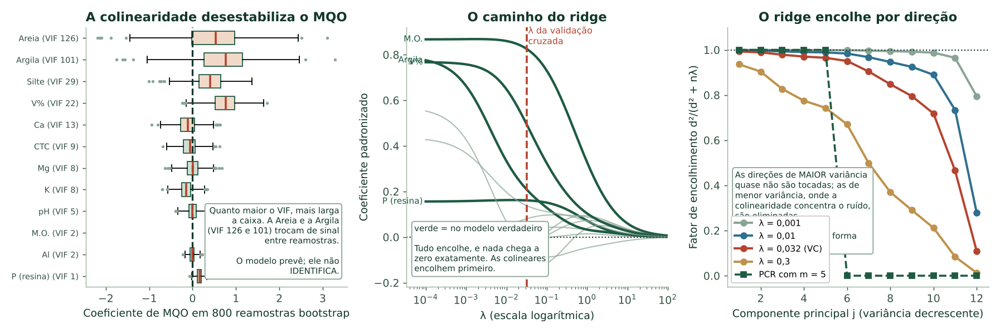
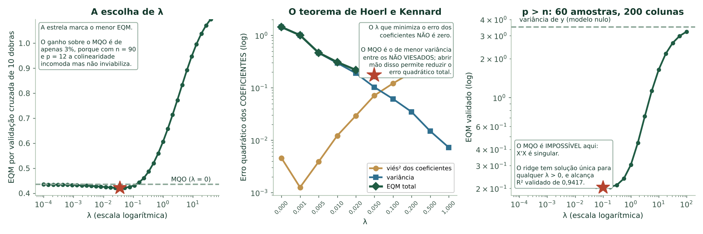

Regressão ridge
Acrescenta uma penalidade sobre o tamanho dos coeficientes, estabilizando o ajuste sob colinearidade e dando solução única mesmo quando p > n.
Comece por aqui
A regressão ridge resolve um problema concreto: quando as variáveis explicativas são muito correlacionadas entre si, os coeficientes de mínimos quadrados ficam enormes, instáveis e de sinal imprevisível — ainda que o modelo preveja razoavelmente bem. O ridge acrescenta à soma de quadrados uma penalidade sobre o tamanho dos coeficientes, e o que se ganha em estabilidade compensa, com margem, o viés que se introduz.
Hoerl e Kennard (1970) provaram que existe sempre um \(\lambda>0\) que reduz o erro quadrático médio dos coeficientes em relação ao de mínimos quadrados. A simulação desta ficha confirma: com o processo gerador conhecido, o erro quadrático dos coeficientes cai de 1,4082 em \(\lambda=0\) para 0,1721 em \(\lambda=0{,}05\) — uma redução de 88%.
O que é a regressão ridge
Mínimos quadrados minimizam \(\|y-X\beta\|^2\). O ridge minimiza a mesma soma mais uma penalidade \(\lambda\|\beta\|^2\), que cobra pelo tamanho dos coeficientes. Quando \(\lambda=0\) recupera-se o MQO; quando \(\lambda\to\infty\) todos os coeficientes vão a zero. Entre os dois extremos há um caminho contínuo, e o que a validação cruzada escolhe é um ponto desse caminho.

| Diagnóstico | Valor | Leitura |
|---|---|---|
| Maior VIF (areia) | 125,9 | acima de 10 já preocupa |
| Segundo maior (argila) | 101,3 | o grupo textural é o problema |
| Número de condição de X | 33,78 | acima de 30 indica colinearidade séria |
| Número de condição de X'X | 1 141 | acima de 1.000 é severo |
| Maior |r| entre duas candidatas | 0,9041 | cálcio × magnésio |
| r(argila, areia) | −0,8780 | as duas maiores frações texturais |
| r(argila, silte + areia) | −0,9935 | o complemento quase exato |
| r(areia, argila + silte) | −0,9950 | idem, na outra direção |
| Menor valor singular | 0,589 | contra 19,901 do maior |
Pressupostos e como verificá-los
| Pressuposto | Por que importa | Como verificar |
|---|---|---|
| Variáveis padronizadas | A penalidade depende da escala. | O glmnet faz por padrão; confirme standardize = TRUE. |
| Intercepto NÃO penalizado | Penalizá-lo tornaria o ajuste dependente da origem de y. | Todas as implementações sérias o excluem. |
| Linearidade na média | O ridge é um modelo linear. | Resíduos contra ajustados. |
| Erros com variância constante | Caso contrário, use mínimos quadrados ponderados. | Gráfico de resíduos; teste de homocedasticidade. |
| Observações independentes | A validação cruzada do λ pressupõe isso. | Com agrupamento, valide por grupo. |
| λ escolhido por validação, não por fórmula | Não há valor universal. | cv.glmnet; refaça em cada dobra ao avaliar. |
| Objetivo é PREDIÇÃO ou estabilidade | O ridge não produz inferência usual. | Os erros-padrão clássicos não valem. |
| Não se espera seleção de variáveis | Nenhum coeficiente chega a zero. | Use lasso se precisar selecionar. |
A demonstração desta ficha muda o fósforo de mg/dm³ para g/dm³ — a mesma informação, outra unidade — com \(\lambda=0{,}05\) e sem padronizar. Para que o ajuste fosse o mesmo, o coeficiente do fósforo teria de passar de 0,017974 para 17,9739; mas um coeficiente mil vezes maior pagaria um milhão de vezes mais penalidade, e o ajuste preferiu deixá-lo em 0,023717 — isto é, expulsou o fósforo do modelo. E a matéria orgânica, que não mudou de unidade, viu o próprio coeficiente cair de 0,7673 para 0,7488 por efeito colateral. Com padronização dentro do laço, o erro validado é idêntico nas duas unidades até a oitava casa decimal.
Formulação e cálculo
Em que:
- \(X\)
- matriz \(n\times p\) das candidatas, já padronizadas
- \(\lambda\)
- parâmetro de penalidade, \(\lambda\ge0\)
- \(I\)
- matriz identidade \(p\times p\)
- \(n\)
- número de observações
- \(\|\beta\|^{2}\)
- soma dos quadrados dos coeficientes, sem o intercepto
O mecanismo, visto pela decomposição em valores singulares
Escrevendo \(X=UDV^{\top}\), com \(D=\operatorname{diag}(d_1,\dots,d_p)\):
Em que:
- \(u_j\)
- \(j\)-ésima coluna de \(U\): a direção principal \(j\)
- \(d_j\)
- \(j\)-ésimo valor singular de \(X\)
- \(d_j^{2}/(d_j^{2}+n\lambda)\)
- o fator de encolhimento da direção \(j\)
A fórmula diz tudo: cada direção principal é encolhida por um fator entre 0 e 1, e o fator é menor para as direções de menor variância. São exatamente essas as direções em que a colinearidade concentra o ruído, e é por isso que o método funciona.
Exemplo numérico, passo a passo
| Componente | Valor singular d | Fator d²/(d² + nλ) |
|---|---|---|
| 1 | 19,901 | 0,9888 |
| 2 | 15,914 | 0,9825 |
| 3 | 11,353 | 0,9663 |
| 4 | 9,640 | 0,9538 |
| 5 | 8,846 | 0,9456 |
| 6 | 7,403 | 0,9241 |
| 7 | 5,179 | 0,8563 |
| 8 | 3,982 | 0,7790 |
| 9 | 3,323 | 0,7105 |
| 10 | 2,694 | 0,6172 |
| 11 | 1,573 | 0,3548 |
| 12 | 0,589 | 0,0716 |
| λ | g.l. ef. | M.O. | V% | Argila | Silte | Areia |
|---|---|---|---|---|---|---|
| 0 (MQO) | 12,000 | 0,8670 | 0,7678 | 0,7912 | 0,4359 | 0,5703 |
| 0,0001 | 11,968 | 0,8672 | 0,7669 | 0,7755 | 0,4276 | 0,5528 |
| 0,0010 | 11,725 | 0,8682 | 0,7575 | 0,6630 | 0,3683 | 0,4278 |
| 0,0100 | 10,690 | 0,8599 | 0,6488 | 0,3336 | 0,1970 | 0,0674 |
| 0,0316 | 9,690 | 0,8257 | 0,4951 | 0,2092 | 0,1383 | −0,0514 |
| 0,1000 | 8,183 | 0,7299 | 0,3239 | 0,1287 | 0,1116 | −0,0870 |
| 0,5000 | 5,376 | 0,4597 | 0,1494 | 0,0493 | 0,0865 | −0,0604 |
| 10,0000 | 0,951 | 0,0598 | 0,0268 | 0,0113 | 0,0163 | −0,0152 |
A matéria orgânica, que tem VIF de apenas 1,8, mantém o coeficiente quase intacto até \(\lambda=0{,}01\). A argila, com VIF 101, cai de 0,7912 para 0,3336 no mesmo intervalo — menos da metade. A areia inverte de sinal, de \(+0{,}5703\) para \(-0{,}0514\): não é instabilidade numérica, é o ajuste abandonando uma parametrização em que areia e argila se cancelavam com coeficientes grandes de sinais opostos.
Os graus de liberdade efetivos descrevem o mesmo movimento em um número só: caem de 12 (o MQO usa todos os 12 parâmetros) para 9,69 no \(\lambda\) escolhido, e para 0,95 em \(\lambda=10\), onde o modelo é praticamente a média de \(y\).
Propriedades
- \(\lambda=0\) devolve o MQO; \(\lambda\to\infty\) leva todos os coeficientes a zero.
- A solução é única para qualquer \(\lambda>0\), inclusive quando \(p>n\): \(X^{\top}X+n\lambda I\) é sempre invertível.
- Encolhe cada direção principal por \(d_j^{2}/(d_j^{2}+n\lambda)\), mais nas de menor variância.
- Não produz zeros exatos: não seleciona variáveis.
- É viesado, de propósito; existe sempre \(\lambda>0\) com menor EQM dos coeficientes (Hoerl e Kennard, 1970).
- Depende da escala: exige padronização.
- Os graus de liberdade efetivos são \(\sum_j d_j^{2}/(d_j^{2}+n\lambda)\), entre 0 e \(p\).
- Equivale à moda a posteriori com priori normal \(N(0,\sigma^{2}/(n\lambda))\) sobre os coeficientes.
Como interpretar os resultados
| Elemento | O que informa | Cuidado |
|---|---|---|
| Gráfico do caminho | Como cada coeficiente encolhe com λ. | Nenhum chega a zero. |
lambda.min | λ de menor erro validado. | Varia entre execuções; fixe a semente. |
lambda.1se | λ maior, a um erro-padrão do mínimo. | Mais regularizado e mais estável. |
| Graus de liberdade efetivos | Complexidade real do ajuste. | Mais interpretável que λ. |
| Coeficientes do ridge | Direção e magnitude relativa. | Não têm erro-padrão clássico válido. |
| Erro validado | O que o modelo prediz em dados novos. | Reescolha λ dentro de cada dobra. |
| Fatores de encolhimento | Quais direções foram descartadas. | Exigem a decomposição em valores singulares. |
Dois cuidados de interpretação
O glmnet não imprime erros-padrão, e não é omissão: a distribuição amostral do estimador ridge depende de \(\lambda\), que foi escolhido olhando os dados, e o estimador é viesado por construção. Intervalos de confiança podem ser obtidos por bootstrap, reamostrando as observações e refazendo a escolha de \(\lambda\) — mas o que eles cobrem é o valor esperado do estimador ridge, não o parâmetro verdadeiro.
Nestes dados o ridge reduz o erro validado de 0,4384 (MQO) para 0,4248 — um ganho de 3,1%. Não é muito, e a razão é que \(n=90\) para \(p=12\): a colinearidade incomoda mas não inviabiliza. O ridge brilha quando \(p\) se aproxima de \(n\) ou o excede, e no conjunto espectral desta ficha, com \(p=200\) e \(n=60\), ele alcança \(R^2\) validado de 0,9414 onde o MQO não tem solução alguma.
Como executar no R e em Python
Onde executar o código em Python
Não é preciso instalar nada: o Google Colab é um computador na nuvem, gratuito, que executa Python pelo navegador e já traz as bibliotecas usadas aqui (numpy, scipy e matplotlib).
O pacote glmnet é a implementação de referência, e alpha = 0 é o ridge. Ele exige uma matriz de preditores, não um data.frame, e padroniza por padrão, devolvendo os coeficientes na escala original — é o comportamento desejado, e não se deve desligar. glmnet(X, y, alpha = 0) ajusta todo o caminho de \(\lambda\) de uma vez, com partida quente entre valores consecutivos; plot(rg, xvar = "lambda") desenha o caminho. cv.glmnet faz a validação cruzada e devolve lambda.min e lambda.1se. O MASS::lm.ridge é a alternativa clássica, com os critérios de Hoerl-Kennard-Baldwin e o GCV, mas o glmnet é preferível por ser muito mais rápido e cobrir também o lasso e a rede elástica.
library(glmnet)
Xm <- as.matrix(solo[, cand]); y <- solo$y
set.seed(1)
cvr <- cv.glmnet(Xm, y, alpha = 0, nfolds = 10)
cvr$lambda.min
coef(cvr, s = "lambda.min")
Exemplo de aplicação
Contexto dos dados
Os dados são fictícios e foram criados pelo autor: 90 amostras de solo de uma área experimental, com a produtividade da cultura (t/ha) e doze variáveis candidatas de análise de rotina — pH, matéria orgânica, fósforo resina, potássio, cálcio, magnésio, alumínio, CTC, saturação por bases (V%), argila, silte e areia. O processo gerador é conhecido e usa apenas quatro delas: matéria orgânica, fósforo, V% e argila, com erro de desvio-padrão 0,60 t/ha. A colinearidade é deliberada e realista: argila, silte e areia somam aproximadamente 100% por construção física, e cálcio, magnésio e potássio estão ligados à CTC e ao V%. Saber qual é o modelo verdadeiro permite verificar se cada método o encontra — o que, em dados reais, nunca é possível. O mesmo conjunto atravessa as seis fichas do grupo.
O segundo conjunto, também fictício, é um espectro de reflectância no infravermelho próximo: 60 amostras, 200 comprimentos de onda entre 1.100 e 2.300 nm, e o teor de proteína (%) como resposta. Quatro bandas de absorção foram construídas, mas apenas duas determinam a proteína; a maior fonte de variação do espectro é uma deriva de linha de base sem relação com ela. Aqui p > n, e os métodos clássicos de seleção deixam de ser aplicáveis.
Código em R
# Regressão ridge: exemplo completo ----
# Pacotes: glmnet (Friedman, Hastie e Tibshirani), car (vif)
# Dados fictícios: 90 amostras de solo, 12 candidatas.
# O arquivo solo.csv acompanha o site, na pasta scripts/.
solo <- read.csv("solo.csv")
str(solo) # y (t/ha) e as 12 candidatas
dim(solo)
# O modelo VERDADEIRO (conhecido por construção) usa só quatro:
# y = 4,00 + 0,80*mo + 0,0250*pres + 0,0300*v + 0,0200*argila + erro
cand <- c("ph","mo","pres","k","ca","mg","al","ctc","v","argila","silte","areia")
verdadeiras <- c("mo","pres","v","argila")
# A colinearidade, que é o problema central do grupo
library(car)
vif(lm(y ~ ., data = solo))
round(cor(solo[, cand]), 2)
# ---- 1. O diagnóstico: a colinearidade é severa
Xp <- scale(as.matrix(solo[, cand]))
sv <- svd(Xp)$d; sv # valores singulares
max(sv)/min(sv) # número de condição de X
kappa(Xp) # idem, pelo R
sort(vif(lm(y ~ ., data = solo)), decreasing = TRUE)
# A consequência: coeficientes instáveis
set.seed(31)
B <- t(replicate(2000, {
i <- sample(nrow(solo), replace = TRUE)
coef(lm(y ~ ., data = solo[i, ]))[-1] }))
data.frame(MQO = round(coef(lm(y ~ ., data = solo))[-1], 4),
EP_boot = round(apply(B, 2, sd), 4),
troca_sinal = round(100*apply(B, 2, function(z)
min(mean(z > 0), mean(z < 0))), 1))
# ---- 2. O ridge
library(glmnet)
Xm <- as.matrix(solo[, cand]); y <- solo$y
# alpha = 0 é o ridge; o glmnet PADRONIZA por padrão
rg <- glmnet(Xm, y, alpha = 0)
plot(rg, xvar = "lambda", label = TRUE)
print(rg)
# Os graus de liberdade efetivos
gl <- sapply(rg$lambda, function(l) sum(sv^2/(sv^2 + l*nrow(solo))))
cbind(lambda = round(rg$lambda, 5), gl_efetivos = round(gl, 3))[c(1,20,40,60,80,100), ]
# ---- 3. O ENCOLHIMENTO por direção principal
l0 <- 0.03162
data.frame(componente = 1:12, d = round(sv, 3),
fator = round(sv^2/(sv^2 + l0*nrow(solo)), 4))
# As direções de MAIOR variância quase não são tocadas; as de menor,
# onde a colinearidade concentra o ruído, são eliminadas.
# ---- 4. A escolha de lambda por validação cruzada
set.seed(1)
cvr <- cv.glmnet(Xm, y, alpha = 0, nfolds = 10)
plot(cvr)
cvr$lambda.min # menor erro
cvr$lambda.1se # regra do erro-padrão único
coef(cvr, s = "lambda.min")
coef(cvr, s = "lambda.1se")
# Comparação honesta com o MQO (lambda reescolhido em cada dobra)
set.seed(3)
k <- 10; d <- sample(rep(1:k, length.out = nrow(solo)))
er_r <- er_o <- numeric(nrow(solo))
for (j in 1:k) {
tr <- d != j; te <- d == j
cj <- cv.glmnet(Xm[tr, ], y[tr], alpha = 0, nfolds = 10)
er_r[te] <- y[te] - predict(cj, newx = Xm[te, ], s = "lambda.min")
er_o[te] <- y[te] - predict(lm(y ~ ., data = solo[tr, ]), newdata = solo[te, ])
}
mean(er_r^2); mean(er_o^2)
# ---- 5. NENHUM coeficiente chega a zero
b <- as.vector(coef(cvr, s = "lambda.min"))[-1]
sum(b == 0) # zero: o ridge não seleciona
min(abs(b))
# Para zerar coeficientes é preciso a penalidade L1 do lasso.
# ---- 6. O REGIME EM QUE O RIDGE É INDISPENSÁVEL: p > n
# Dados fictícios: espectro NIR, 60 amostras, 200 comprimentos de onda.
# O arquivo espectro.csv acompanha o site, na pasta scripts/.
esp <- read.csv("espectro.csv")
dim(esp) # 60 x 201: proteina + nm1100 ... nm2300
Xe <- as.matrix(esp[, -1]); ye <- esp$proteina
qr(scale(Xe))$rank # 59: o posto é menor que o número de colunas
m_imp <- lm(ye ~ Xe)
sum(is.na(coef(m_imp))) # 141 coeficientes NA: X'X é singular
summary(m_imp)$r.squared # 1: ajuste perfeito e inútil
set.seed(7)
cve <- cv.glmnet(Xe, ye, alpha = 0, nfolds = 10)
cve$lambda.min
min(cve$cvm) # EQM validado
1 - min(cve$cvm)/var(ye) # R² validado
# Com p > n o ridge continua tendo solução única, porque X'X + n*lambda*I
# é sempre invertível para lambda > 0.
# ---- 7. PADRONIZAR NÃO É OPCIONAL
# A penalidade soma os QUADRADOS dos coeficientes, de modo que depende da
# escala. Mudar a unidade de UMA variável muda o ajuste de TODAS.
solo2 <- solo; solo2$pres <- solo2$pres/1000 # mg/dm3 -> g/dm3
b1 <- coef(glmnet(as.matrix(solo[, cand]), y, alpha = 0, lambda = 0.05,
standardize = FALSE))
b2 <- coef(glmnet(as.matrix(solo2[, cand]), y, alpha = 0, lambda = 0.05,
standardize = FALSE))
cbind(mg_dm3 = round(as.vector(b1), 6), g_dm3 = round(as.vector(b2), 6))
# Com standardize = TRUE (o padrão) o problema desaparece.
A mesma análise em Python, com os resultados
Cole o código em um notebook do Google Colab ↗ e execute com Shift+Enter. Os valores abaixo são a saída desse código.
import numpy as np
# ------------------------------------------------------------------
# Bloco comum às fichas deste grupo: funções auxiliares e dados (cab14)
# ------------------------------------------------------------------
import numpy as np, itertools
# ------------------------------------------------------------------
# Bloco comum às fichas deste grupo: funções auxiliares e dados (dados14)
# ------------------------------------------------------------------
import numpy as np
import pandas as pd
def le_csv(nome):
"""Lê o arquivo de dados da ficha: primeiro na pasta atual; se não
estiver lá (por exemplo, no Google Colab), direto do site."""
try:
return pd.read_csv(nome)
except FileNotFoundError:
return pd.read_csv('https://cassiushenrique.github.io/ModelosEstatisticos/scripts/' + nome)
# Dados fictícios: 90 amostras de solo (arquivo solo.csv, pasta scripts/ do site)
solo = le_csv('solo.csv')
NOMES=['ph', 'mo', 'pres', 'k', 'ca', 'mg', 'al', 'ctc', 'v', 'argila', 'silte', 'areia']
ROT={'ph':'pH','mo':'M.O.','pres':'P (resina)','k':'K','ca':'Ca','mg':'Mg','al':'Al','ctc':'CTC','v':'V%','argila':'Argila','silte':'Silte','areia':'Areia'}
X=solo[NOMES].to_numpy(float); Y=solo['y'].to_numpy(float)
VERD={"mo":0.80,"pres":0.0250,"v":0.0300,"argila":0.0200}
N,P=X.shape
# ------------------------------------------------------------------ fim do bloco comum
def pad(A, mu=None, sd=None):
"""Padroniza colunas (média 0, desvio 1, com n-1)."""
if mu is None: mu = A.mean(0)
if sd is None: sd = A.std(0, ddof=1)
sd = np.where(sd < 1e-12, 1.0, sd)
return (A - mu)/sd, mu, sd
def ols(A, y):
Ad = np.column_stack([np.ones(len(A)), A])
return np.linalg.lstsq(Ad, y, rcond=None)[0]
def prev(A, b):
return b[0] + A @ b[1:]
def sqr(obs, p_): return float(np.sum((obs - p_)**2))
def eqm(obs, p_): return float(np.mean((obs - p_)**2))
def ridge(A, y, lam):
"""Ridge em A JÁ padronizado; não penaliza o intercepto."""
n_, p_ = A.shape
G = A.T @ A + lam*n_*np.eye(p_)
b = np.linalg.solve(G, A.T @ (y - y.mean()))
return np.concatenate([[y.mean()], b])
def lasso(A, y, lam, it=20000, tol=1e-11):
"""Descida por coordenadas em A JÁ padronizado (Friedman et al., 2010)."""
n_, p_ = A.shape
b = np.zeros(p_); r = y - y.mean()
nrm = (A**2).sum(0)/n_
for _ in range(it):
mx = 0.0
for j in range(p_):
bj = b[j]
rho = A[:, j] @ (r + A[:, j]*bj)/n_
nb = np.sign(rho)*max(abs(rho) - lam, 0.0)/nrm[j]
if nb != bj:
r = r - A[:, j]*(nb - bj); b[j] = nb
mx = max(mx, abs(nb - bj))
if mx < tol: break
return np.concatenate([[y.mean()], b])
def pcr(A, y, m):
"""Regressão nos m primeiros componentes principais de A padronizado."""
u, s, vt = np.linalg.svd(A, full_matrices=False)
T = (u*s)[:, :m]
g = np.linalg.lstsq(T, y - y.mean(), rcond=None)[0]
b = vt[:m].T @ g
return np.concatenate([[y.mean()], b])
def pls(A, y, m):
"""NIPALS para uma resposta; devolve coeficientes na escala de A."""
Xr = A.copy(); yr = y - y.mean()
W = np.zeros((A.shape[1], m)); Pm = np.zeros((A.shape[1], m)); q = np.zeros(m)
for a in range(m):
w = Xr.T @ yr; w = w/np.linalg.norm(w)
t = Xr @ w; tt = t @ t
pj = Xr.T @ t/tt; qa = (yr @ t)/tt
Xr = Xr - np.outer(t, pj); yr = yr - qa*t
W[:, a] = w; Pm[:, a] = pj; q[a] = qa
Rm = W @ np.linalg.inv(Pm.T @ W)
b = Rm @ q
return np.concatenate([[y.mean()], b])
def dobras(n_, k, seed):
rg = np.random.default_rng(seed)
d = np.tile(np.arange(k), int(np.ceil(n_/k)))[:n_]
rg.shuffle(d); return d
def cv(ajusta, A, y, k=10, seed=0, reps=1):
"""EQM por validação cruzada; TODA a padronização dentro do laço."""
tot = []
for r in range(reps):
d = dobras(len(y), k, seed + 1000*r); e = np.empty(len(y))
for j in range(k):
tr, te = d != j, d == j
Ap, mu, sd = pad(A[tr])
b = ajusta(Ap, y[tr])
e[te] = y[te] - prev((A[te] - mu)/sd, b)
tot.append(float(np.mean(e**2)))
return float(np.mean(tot)), float(np.std(tot, ddof=1)) if reps > 1 else 0.0
def crit(A, y, cols, s2):
"""Cp de Mallows, AIC e BIC de um submodelo."""
Ad = np.column_stack([np.ones(len(A))] + [A[:, j] for j in cols])
b = np.linalg.lstsq(Ad, y, rcond=None)[0]
sq = sqr(y, Ad @ b); n_, d = len(y), len(cols) + 1
return dict(sqr=sq, p=d, r2=1 - sq/np.sum((y - y.mean())**2),
r2a=1 - (sq/(n_ - d))/(np.sum((y - y.mean())**2)/(n_ - 1)),
cp=sq/s2 - n_ + 2*d,
aic=n_*np.log(sq/n_) + 2*d, bic=n_*np.log(sq/n_) + np.log(n_)*d)
def vif(A):
Ap, _, _ = pad(A); out = []
for j in range(A.shape[1]):
o = [i for i in range(A.shape[1]) if i != j]
b = ols(Ap[:, o], Ap[:, j]); r = Ap[:, j] - prev(Ap[:, o], b)
out.append(1/(1 - (1 - r @ r/np.sum((Ap[:, j] - Ap[:, j].mean())**2))))
return np.array(out)
def c(v, d=4):
return ('%.*f' % (d, v)).replace('.', ',')
def lasso_path(A, y, lams, it=5000, tol=1e-10):
"""Caminho do lasso com partida quente (como o glmnet). lams DECRESCENTE."""
n_, p_ = A.shape
b = np.zeros(p_); r = y - y.mean(); nrm = (A**2).sum(0)/n_
out = []
for lam in lams:
for _ in range(it):
mx = 0.0
for j in range(p_):
bj = b[j]
rho = A[:, j] @ (r + A[:, j]*bj)/n_
nb = np.sign(rho)*max(abs(rho) - lam, 0.0)/nrm[j]
if nb != bj:
r = r - A[:, j]*(nb - bj); b[j] = nb
mx = max(mx, abs(nb - bj))
if mx < tol: break
out.append(np.concatenate([[y.mean()], b.copy()]))
return out
def enet_path(A, y, lams, al, it=5000, tol=1e-10):
n_, p_ = A.shape
b = np.zeros(p_); r = y - y.mean(); nrm = (A**2).sum(0)/n_
out = []
for lam in lams:
for _ in range(it):
mx = 0.0
for j in range(p_):
bj = b[j]
rho = A[:, j] @ (r + A[:, j]*bj)/n_
nb = np.sign(rho)*max(abs(rho) - lam*al, 0.0)/(nrm[j] + lam*(1 - al))
if nb != bj:
r = r - A[:, j]*(nb - bj); b[j] = nb
mx = max(mx, abs(nb - bj))
if mx < tol: break
out.append(np.concatenate([[y.mean()], b.copy()]))
return out
def cv_path(ajusta_path, A, y, lams, k=10, seed=0, reps=1):
"""EQM por VC para TODA a grade de lambda de uma vez, com partida quente."""
acc = np.zeros((reps, len(lams)))
for rp in range(reps):
d = dobras(len(y), k, seed + 1000*rp); E = np.zeros((len(lams), len(y)))
for j in range(k):
tr, te = d != j, d == j
Ap, mu, sd = pad(A[tr])
bs = ajusta_path(Ap, y[tr], lams)
Ate = (A[te] - mu)/sd
for i, b in enumerate(bs): E[i, te] = y[te] - prev(Ate, b)
acc[rp] = (E**2).mean(1)
return acc.mean(0), acc.std(0, ddof=1) if reps > 1 else np.zeros(len(lams))
def _cd_gram(G, Ay, lam, al, b, dg, it=10000, tol=1e-11):
"""Descida por coordenadas usando a matriz de Gram: só escalares no laço."""
p_ = len(b)
for _ in range(it):
mx = 0.0
for j in range(p_):
bj = b[j]
rho = Ay[j] - (G[j] @ b - dg[j]*bj)
nb = np.sign(rho)*max(abs(rho) - lam*al, 0.0)/(dg[j] + lam*(1 - al))
if nb != bj:
b[j] = nb; mx = max(mx, abs(nb - bj))
if mx < tol: break
return b
def enet_path_g(A, y, lams, al=1.0):
"""Caminho da rede elástica (al=1 é o lasso) com Gram e partida quente."""
n_, p_ = A.shape
G = A.T @ A/n_; Ay = A.T @ (y - y.mean())/n_; dg = np.diag(G).copy()
b = np.zeros(p_); out = []
for lam in lams:
b = _cd_gram(G, Ay, lam, al, b, dg)
out.append(np.concatenate([[y.mean()], b.copy()]))
return out
def lasso_path_g(A, y, lams): return enet_path_g(A, y, lams, 1.0)
def _cd_ativo(G, Ay, lam, al, b, dg, it=200, tol=1e-11):
"""Descida por coordenadas com CONJUNTO ATIVO (estratégia do glmnet):
varre tudo, depois itera só nos coeficientes não nulos."""
p_ = len(b)
for _ in range(it):
# varredura completa
mx = 0.0
for j in range(p_):
bj = b[j]
rho = Ay[j] - (G[j] @ b - dg[j]*bj)
nb = np.sign(rho)*max(abs(rho) - lam*al, 0.0)/(dg[j] + lam*(1 - al))
if nb != bj:
b[j] = nb; mx = max(mx, abs(nb - bj))
ativo = np.flatnonzero(b)
if len(ativo) == 0 or mx < tol: break
Ga = G[np.ix_(ativo, ativo)]; Aya = Ay[ativo]; dga = dg[ativo]
ba = b[ativo].copy()
for _ in range(2000):
mxa = 0.0
for i in range(len(ativo)):
bi = ba[i]
rho = Aya[i] - (Ga[i] @ ba - dga[i]*bi)
nb = np.sign(rho)*max(abs(rho) - lam*al, 0.0)/(dga[i] + lam*(1 - al))
if nb != bi:
ba[i] = nb; mxa = max(mxa, abs(nb - bi))
if mxa < tol: break
b[ativo] = ba
if mx < tol: break
return b
def enet_path_a(A, y, lams, al=1.0):
n_, p_ = A.shape
G = A.T @ A/n_; Ay = A.T @ (y - y.mean())/n_; dg = np.diag(G).copy()
b = np.zeros(p_); out = []
for lam in lams:
b = _cd_ativo(G, Ay, lam, al, b, dg)
out.append(np.concatenate([[y.mean()], b.copy()]))
return out
def lasso_path_a(A, y, lams): return enet_path_a(A, y, lams, 1.0)
# ------------------------------------------------------------------ fim do bloco comum
# ------------------------------------------------------------------
# Bloco comum às fichas deste grupo: funções auxiliares e dados (dados14b)
# ------------------------------------------------------------------
import numpy as np
import pandas as pd
def le_csv(nome):
"""Lê o arquivo de dados da ficha: primeiro na pasta atual; se não
estiver lá (por exemplo, no Google Colab), direto do site."""
try:
return pd.read_csv(nome)
except FileNotFoundError:
return pd.read_csv('https://cassiushenrique.github.io/ModelosEstatisticos/scripts/' + nome)
# Dados fictícios: 60 espectros NIR de 200 bandas (arquivo espectro.csv)
esp = le_csv('espectro.csv')
LAM=np.round(np.linspace(1100,2300,200),1) # comprimentos de onda (nm)
XE=esp.drop(columns='proteina').to_numpy(float); YE=esp['proteina'].to_numpy(float)
NE,PE=XE.shape
# ------------------------------------------------------------------ fim do bloco comum
Xp,mu,sd=pad(X); SQT=float(np.sum((Y-Y.mean())**2))
V=vif(X)
print('Os mesmos 90 perfis de solo e as mesmas 12 candidatas.')
print('O problema desta ficha é a COLINEARIDADE, e ela é severa:')
print()
u,s,vt=np.linalg.svd(Xp,full_matrices=False)
print(' maior VIF (Areia) %s'%c(V.max(),1))
print(' número de condição de X %s'%c(float(s[0]/s[-1]),2))
R_=np.corrcoef(X.T)
_pr=max(((abs(R_[i,j]),i,j) for i in range(P) for j in range(i+1,P)))
print(' maior |r| entre duas candidatas %s (%s x %s)'%(c(_pr[0]),ROT[NOMES[_pr[1]]],ROT[NOMES[_pr[2]]]))
print(' r(Argila, Silte + Areia) %s'%c(float(np.corrcoef(X[:,NOMES.index('argila')],X[:,NOMES.index('silte')]+X[:,NOMES.index('areia')])[0,1])))
print(' r(Areia, Argila + Silte) %s'%c(float(np.corrcoef(X[:,NOMES.index('areia')],X[:,NOMES.index('argila')]+X[:,NOMES.index('silte')])[0,1])))
print(' valores singulares de X, do maior ao menor:')
print(' ',' '.join(c(float(v),3) for v in s))
print()
print('A razão é física: argila + silte + areia = 100% por construção, de modo')
print('que cada fração é quase o complemento das outras duas (r = -0,99); e')
print('Ca + Mg + K estão ligados à CTC e à saturação por bases, com Ca x Mg')
print('chegando a r = 0,90.')
print('\n'+'='*70)
print('A CONSEQUÊNCIA: os coeficientes de mínimos quadrados são instáveis')
b0=ols(Xp,Y)
rg=np.random.default_rng(31)
B=np.zeros((2000,P))
for r in range(2000):
i=rg.integers(0,N,N); Ab,_,_=pad(X[i]); B[r]=ols(Ab,Y[i])[1:]
print()
print('%-11s %10s %10s %10s %9s %s'%('variável','MQO','EP boot','VIF','|EP/est|','sinal muda?'))
for j in range(P):
ep=B[:,j].std(ddof=1)
pct=100*min(np.mean(B[:,j]>0),np.mean(B[:,j]<0))
print('%-11s %10s %10s %10s %9s %4.1f%%'%(ROT[NOMES[j]],c(b0[1+j]),c(ep),
c(V[j],1),c(abs(ep/b0[1+j]),2) if abs(b0[1+j])>1e-9 else '-',pct))
print()
print('Os coeficientes das três frações texturais e os do complexo de troca')
print('têm erro-padrão da ordem da própria estimativa, e trocam de sinal entre')
print('reamostras. Não é que o modelo não preveja: é que ele não IDENTIFICA')
print('qual das variáveis colineares é responsável.')
print('\n'+'='*70)
print('A SOLUÇÃO RIDGE: encolher os coeficientes para perto de zero')
print()
LAMS=np.logspace(-4,2,61)
PATH=np.array([ridge(Xp,Y,l)[1:] for l in LAMS])
GL=np.array([float(np.sum(s**2/(s**2+l*N))) for l in LAMS])
print('%10s %8s %s'%('lambda','g.l. ef.','coeficientes (M.O., V%, Argila, Silte, Areia)'))
for l in [0.0,1e-4,1e-3,1e-2,0.05,0.1,0.5,1.0,10.0]:
b=ridge(Xp,Y,l) if l>0 else ols(Xp,Y)
g=float(np.sum(s**2/(s**2+l*N))) if l>0 else P
print('%10s %8s %s'%(c(l,4),c(g,3),' '.join(c(b[1+NOMES.index(k)]) for k in ['mo','v','argila','silte','areia'])))
print()
print('Em lambda = 0 o ridge é o MQO. Quando lambda cresce, os coeficientes')
print('encolhem; os das variáveis colineares encolhem PRIMEIRO e mais rápido.')
print('Os graus de liberdade efetivos caem de 12 (MQO) para perto de zero.')
print('\n'+'='*70)
print('O ENCOLHIMENTO, componente por componente')
print()
print('O ridge não encolhe todas as direções igualmente: encolhe cada direção')
print('principal pelo fator d_j^2/(d_j^2 + n*lambda).')
print()
lsel=0.05
print('componente valor singular d_j fator de encolhimento (lambda = %s)'%c(lsel,3))
for j in range(P):
print('%8d %18s %s'%(j+1,c(float(s[j]),3),c(float(s[j]**2/(s[j]**2+lsel*N)))))
print()
print('As direções de MAIOR variância em X quase não são tocadas; as de menor')
print('variância — justamente aquelas em que a colinearidade concentra o ruído —')
print('são praticamente eliminadas. É esse o mecanismo.')
print('\n'+'='*70)
print('A ESCOLHA DE lambda POR VALIDAÇÃO CRUZADA (10 dobras, 20 repetições)')
print()
res=[]
for l in LAMS:
m,dp=cv(lambda A,y,l=l: ridge(A,y,l),X,Y,10,0,20)
res.append((l,m,dp))
res=np.array(res)
jm=int(np.argmin(res[:,1])); lmin=res[jm,0]
# regra do erro-padrão único, EP ENTRE DOBRAS no lambda mínimo
d=dobras(N,10,0); ef=[]
for j in range(10):
tr,te=d!=j,d==j; Ap,m_,s_=pad(X[tr])
b=ridge(Ap,Y[tr],lmin); ef.append(eqm(Y[te],prev((X[te]-m_)/s_,b)))
ep1=float(np.std(ef,ddof=1)/np.sqrt(10))
cand=[r for r in res if r[1]<=res[jm,1]+ep1]
l1se=max(r[0] for r in cand)
print('%10s %10s %10s %9s'%('lambda','EQM 10-fold','g.l. ef.',''))
for l in [1e-4,1e-3,1e-2,0.02,0.05,0.1,0.2,0.5,1.0,5.0,20.0]:
k=int(np.argmin(np.abs(LAMS-l)))
mk=' <- menor' if abs(LAMS[k]-lmin)<1e-12 else ''
print('%10s %10s %10s %9s'%(c(LAMS[k],4),c(res[k,1]),c(GL[k],2),mk))
print()
print(' lambda do menor EQM = %s (EQM %s, g.l. ef. %s)'%(c(lmin,5),c(res[jm,1]),c(GL[jm],2)))
print(' erro-padrão entre as 10 dobras = %s'%c(ep1))
print(' lambda da regra do EP único = %s (EQM %s, g.l. ef. %s)'%(c(l1se,5),
c(res[int(np.argmin(np.abs(LAMS-l1se))),1]),c(GL[int(np.argmin(np.abs(LAMS-l1se)))],2)))
print()
print(' EQM validado do MQO (lambda = 0) = %s'%c(cv(ols,X,Y,10,0,20)[0]))
print(' EQM validado do ridge no melhor lambda = %s'%c(res[jm,1]))
print(' ganho do ridge sobre o MQO = %.1f%%'%(100*(1-res[jm,1]/cv(ols,X,Y,10,0,20)[0])))
print('\n'+'='*70)
print('O ARGUMENTO DE HOERL E KENNARD (1970): existe lambda > 0 que reduz o')
print('erro quadrático dos COEFICIENTES, e não apenas o erro de predição.')
print('Simulação com o processo gerador conhecido, 1.000 amostras de n = 90.')
print()
bv=np.zeros(P)
for k,v in VERD.items(): bv[NOMES.index(k)]=v
# coeficientes verdadeiros na escala padronizada
bvp=bv*sd
rg=np.random.default_rng(37)
ls=[0.0,0.001,0.005,0.01,0.02,0.05,0.1,0.2,0.5,1.0]
ac={l:[] for l in ls}
for r in range(1000):
yy=4.00+X@bv+rg.normal(0,0.60,N)
Ap,m_,s_=pad(X)
for l in ls:
b=ols(Ap,yy) if l==0 else ridge(Ap,yy,l)
ac[l].append(b[1:])
print('%10s %12s %12s %12s'%('lambda','viés² dos b','variância','EQM dos b'))
for l in ls:
A_=np.array(ac[l]); vi=float(np.sum((A_.mean(0)-bvp)**2)); va=float(np.sum(A_.var(0,ddof=1)))
print('%10s %12s %12s %12s'%(c(l,4),c(vi),c(va),c(vi+va)))
print()
mb=min(ls,key=lambda l:(lambda A_:float(np.sum((A_.mean(0)-bvp)**2))+float(np.sum(A_.var(0,ddof=1))))(np.array(ac[l])))
print('O lambda que minimiza o EQM dos coeficientes é %s, e NÃO zero.'%c(mb,4))
print('É o teorema de Hoerl e Kennard: o MQO é o de menor variância entre os')
print('estimadores NÃO VIESADOS, mas abrir mão do não viesamento permite')
print('reduzir o erro quadrático total.')
print('\n'+'='*70)
print('O RIDGE NÃO SELECIONA: nenhum coeficiente chega a zero')
b=ridge(Xp,Y,lmin)
print()
print('No lambda escolhido (%s), os 12 coeficientes:'%c(lmin,5))
for j in np.argsort(-np.abs(b[1:])):
print(' %-11s %10s %s'%(ROT[NOMES[j]],c(b[1+j]),'(no modelo verdadeiro)' if NOMES[j] in VERD else ''))
print()
print(' coeficientes exatamente zero: %d de 12'%int(np.sum(np.abs(b[1:])<1e-12)))
print(' menor |coeficiente|: %s'%c(float(np.abs(b[1:]).min())))
print()
print('Para zerar coeficientes é preciso a penalidade L1 do lasso.')
print('\n'+'='*70)
print('O REGIME EM QUE O RIDGE É INDISPENSÁVEL: p > n')
print('Espectro de reflectância: %d amostras, %d comprimentos de onda,'%(NE,PE))
print('resposta = teor de proteína (%). Dados fictícios, bandas construídas.')
print()
Ep,emu,esd=pad(XE)
ru,rs,rvt=np.linalg.svd(Ep,full_matrices=False)
print(' posto de X: %d (há %d colunas e %d linhas)'%(int(np.sum(rs>1e-8)),PE,NE))
print(' r médio entre colunas vizinhas: %s'%c(float(np.mean([np.corrcoef(Ep[:,i],Ep[:,i+1])[0,1] for i in range(PE-1)]))))
print()
print("O MQO é IMPOSSÍVEL: X'X é singular, há infinitas soluções com resíduo")
print('zero. O R devolve NA para 141 dos 200 coeficientes e R² = 1.')
bo=np.linalg.lstsq(np.column_stack([np.ones(NE),Ep]),YE,rcond=None)[0]
print(' R² de resubstituição da solução de norma mínima: %s'%c(1-sqr(YE,prev(Ep,bo))/float(np.sum((YE-YE.mean())**2))))
print()
rres=[]
for l in np.logspace(-4,2,31):
m,_=cv(lambda A,y,l=l: ridge(A,y,l),XE,YE,10,0,5)
rres.append((l,m))
rres=np.array(rres); jr=int(np.argmin(rres[:,1]))
print('%10s %12s'%('lambda','EQM 10-fold'))
for l,m in rres[::4]:
print('%10s %12s%s'%(c(l,5),c(m),' <- menor' if abs(l-rres[jr,0])<1e-12 else ''))
print()
print(' melhor lambda = %s, EQM validado = %s'%(c(rres[jr,0],5),c(rres[jr,1])))
print(' variância de y = %s'%c(float(YE.var(ddof=1))))
print(' R² validado = %s'%c(1-rres[jr,1]/float(YE.var(ddof=1))))
print()
print("Com p > n o ridge continua tendo solução única, porque X'X + n*lambda*I")
print('é sempre invertível para lambda > 0. É a razão algébrica da sua utilidade.')
print('\n'+'='*70)
print('UM CUIDADO QUE NÃO É OPCIONAL: PADRONIZAR')
print()
print('A penalidade soma os QUADRADOS dos coeficientes, de modo que ela pesa')
print('mais sobre as variáveis de escala pequena. Mudar a unidade de UMA delas')
print('muda o ajuste de TODAS as outras — o que é inaceitável.')
print()
jP=NOMES.index('pres'); jM=NOMES.index('mo')
X2=X.copy(); X2[:,jP]=X2[:,jP]/1000.0 # mg/dm3 -> g/dm3
def ridge_cru(A,y,lam):
Ac=A-A.mean(0); n_=len(y)
b=np.linalg.solve(Ac.T@Ac+lam*n_*np.eye(A.shape[1]),Ac.T@(y-y.mean()))
return np.concatenate([[y.mean()-A.mean(0)@b],b])
print('SEM padronizar, lambda = 0,05:')
print('%-34s %12s %12s'%('','P em mg/dm³','P em g/dm³'))
b1=ridge_cru(X,Y,0.05); b2=ridge_cru(X2,Y,0.05)
print('%-34s %12s %12s'%('coeficiente do P (resina)',c(b1[1+jP],6),c(b2[1+jP],6)))
print('%-34s %12s %12s'%('coeficiente da M.O.',c(b1[1+jM]),c(b2[1+jM])))
print('%-34s %12s %12s'%('coeficiente do V%',c(b1[1+NOMES.index("v")]),c(b2[1+NOMES.index("v")])))
print('%-34s %12s %12s'%('EQM de resubstituição',c(eqm(Y,prev(X,b1))),c(eqm(Y,prev(X2,b2)))))
print()
print('Para que o ajuste fosse o MESMO, o coeficiente do P teria de passar de')
print('%s para %s (multiplicado por 1.000). Mas a penalidade proíbe:'%(c(b1[1+jP],6),c(1000*b1[1+jP],4)))
print('um coeficiente mil vezes maior pagaria um milhão de vezes mais, e o')
print('ajuste preferiu deixá-lo em %s — isto é, praticamente EXPULSOU o P'%c(b2[1+jP],6))
print('do modelo. E a M.O., que não mudou de unidade, viu o próprio coeficiente')
print('cair de %s para %s por efeito colateral. O EQM de resubstituição'%(c(b1[1+jM]),c(b2[1+jM])))
print('passou de %s para %s.'%(c(eqm(Y,prev(X,b1))),c(eqm(Y,prev(X2,b2)))))
print()
print('COM padronização dentro do laço:')
c1=cv(lambda A,y: ridge(A,y,0.05),X,Y,10,0,20)[0]
c2=cv(lambda A,y: ridge(A,y,0.05),X2,Y,10,0,20)[0]
print(' EQM validado, P em mg/dm³ = %s'%c(c1))
print(' EQM validado, P em g/dm³ = %s'%c(c2))
print(' diferença = %s (invariância exata, a menos de arredondamento)'%c(abs(c1-c2),8))
print()
print('O glmnet padroniza por padrão (standardize = TRUE) e devolve os')
print('coeficientes já na escala original, que é o que se quer reportar.')
Resultados da execução
Os mesmos 90 perfis de solo e as mesmas 12 candidatas.
O problema desta ficha é a COLINEARIDADE, e ela é severa:
maior VIF (Areia) 125,9
número de condição de X 33,78
maior |r| entre duas candidatas 0,9041 (Ca x Mg)
r(Argila, Silte + Areia) -0,9935
r(Areia, Argila + Silte) -0,9950
valores singulares de X, do maior ao menor:
19,901 15,914 11,353 9,640 8,846 7,403 5,179 3,982 3,323 2,694 1,573 0,589
A razão é física: argila + silte + areia = 100% por construção, de modo
que cada fração é quase o complemento das outras duas (r = -0,99); e
Ca + Mg + K estão ligados à CTC e à saturação por bases, com Ca x Mg
chegando a r = 0,90.
======================================================================
A CONSEQUÊNCIA: os coeficientes de mínimos quadrados são instáveis
variável MQO EP boot VIF |EP/est| sinal muda?
pH 0,0156 0,1383 4,6 8,87 48.6%
M.O. 0,8670 0,1093 1,8 0,13 0.0%
P (resina) 0,1560 0,0634 1,1 0,41 0.7%
K -0,1673 0,1747 8,0 1,04 19.4%
Ca -0,1458 0,2429 13,0 1,67 30.6%
Mg 0,0139 0,1976 8,5 14,27 48.2%
Al -0,0074 0,0686 1,6 9,31 45.8%
CTC -0,0557 0,2006 9,5 3,60 35.9%
V% 0,7678 0,3326 22,2 0,43 1.6%
Argila 0,7912 0,6841 101,3 0,86 12.8%
Silte 0,4359 0,3695 29,2 0,85 13.6%
Areia 0,5703 0,7646 125,9 1,34 25.1%
Os coeficientes das três frações texturais e os do complexo de troca
têm erro-padrão da ordem da própria estimativa, e trocam de sinal entre
reamostras. Não é que o modelo não preveja: é que ele não IDENTIFICA
qual das variáveis colineares é responsável.
======================================================================
A SOLUÇÃO RIDGE: encolher os coeficientes para perto de zero
lambda g.l. ef. coeficientes (M.O., V%, Argila, Silte, Areia)
0,0000 12,000 0,8670 0,7678 0,7912 0,4359 0,5703
0,0001 11,968 0,8672 0,7669 0,7755 0,4276 0,5528
0,0010 11,725 0,8682 0,7575 0,6630 0,3683 0,4278
0,0100 10,690 0,8599 0,6488 0,3336 0,1970 0,0674
0,0500 9,151 0,7972 0,4248 0,1740 0,1248 -0,0742
0,1000 8,183 0,7299 0,3239 0,1287 0,1116 -0,0870
0,5000 5,376 0,4597 0,1494 0,0493 0,0865 -0,0604
1,0000 4,087 0,3279 0,1037 0,0329 0,0693 -0,0469
10,0000 0,951 0,0598 0,0268 0,0113 0,0163 -0,0152
Em lambda = 0 o ridge é o MQO. Quando lambda cresce, os coeficientes
encolhem; os das variáveis colineares encolhem PRIMEIRO e mais rápido.
Os graus de liberdade efetivos caem de 12 (MQO) para perto de zero.
======================================================================
O ENCOLHIMENTO, componente por componente
O ridge não encolhe todas as direções igualmente: encolhe cada direção
principal pelo fator d_j^2/(d_j^2 + n*lambda).
componente valor singular d_j fator de encolhimento (lambda = 0,050)
1 19,901 0,9888
2 15,914 0,9825
3 11,353 0,9663
4 9,640 0,9538
5 8,846 0,9456
6 7,403 0,9241
7 5,179 0,8563
8 3,982 0,7790
9 3,323 0,7105
10 2,694 0,6172
11 1,573 0,3548
12 0,589 0,0716
As direções de MAIOR variância em X quase não são tocadas; as de menor
variância — justamente aquelas em que a colinearidade concentra o ruído —
são praticamente eliminadas. É esse o mecanismo.
======================================================================
A ESCOLHA DE lambda POR VALIDAÇÃO CRUZADA (10 dobras, 20 repetições)
lambda EQM 10-fold g.l. ef.
0,0001 0,4380 11,97
0,0010 0,4354 11,72
0,0100 0,4278 10,69
0,0200 0,4255 10,14
0,0501 0,4257 9,15
0,1000 0,4336 8,18
0,1995 0,4576 7,05
0,5012 0,5278 5,37
1,0000 0,6093 4,09
5,0119 0,8586 1,61
19,9526 1,0459 0,53
lambda do menor EQM = 0,03162 (EQM 0,4248, g.l. ef. 9,69)
erro-padrão entre as 10 dobras = 0,0554
lambda da regra do EP único = 0,25119 (EQM 0,4707, g.l. ef. 6,64)
EQM validado do MQO (lambda = 0) = 0,4384
EQM validado do ridge no melhor lambda = 0,4248
ganho do ridge sobre o MQO = 3.1%
======================================================================
O ARGUMENTO DE HOERL E KENNARD (1970): existe lambda > 0 que reduz o
erro quadrático dos COEFICIENTES, e não apenas o erro de predição.
Simulação com o processo gerador conhecido, 1.000 amostras de n = 90.
lambda viés² dos b variância EQM dos b
0,0000 0,0037 1,4045 1,4082
0,0010 0,0008 0,9797 0,9805
0,0050 0,0043 0,4471 0,4514
0,0100 0,0130 0,2863 0,2992
0,0200 0,0302 0,1840 0,2142
0,0500 0,0713 0,1009 0,1721
0,1000 0,1202 0,0608 0,1809
0,2000 0,1937 0,0344 0,2281
0,5000 0,3432 0,0148 0,3580
1,0000 0,4851 0,0072 0,4922
O lambda que minimiza o EQM dos coeficientes é 0,0500, e NÃO zero.
É o teorema de Hoerl e Kennard: o MQO é o de menor variância entre os
estimadores NÃO VIESADOS, mas abrir mão do não viesamento permite
reduzir o erro quadrático total.
======================================================================
O RIDGE NÃO SELECIONA: nenhum coeficiente chega a zero
No lambda escolhido (0,03162), os 12 coeficientes:
M.O. 0,8257 (no modelo verdadeiro)
V% 0,4951 (no modelo verdadeiro)
Argila 0,2092 (no modelo verdadeiro)
P (resina) 0,1612 (no modelo verdadeiro)
Silte 0,1383
CTC -0,1196
Mg 0,0805
K -0,0593
Ca -0,0572
Areia -0,0514
pH 0,0343
Al -0,0097
coeficientes exatamente zero: 0 de 12
menor |coeficiente|: 0,0097
Para zerar coeficientes é preciso a penalidade L1 do lasso.
======================================================================
O REGIME EM QUE O RIDGE É INDISPENSÁVEL: p > n
Espectro de reflectância: 60 amostras, 200 comprimentos de onda,
resposta = teor de proteína (%). Dados fictícios, bandas construídas.
posto de X: 59 (há 200 colunas e 60 linhas)
r médio entre colunas vizinhas: 0,9975
O MQO é IMPOSSÍVEL: X'X é singular, há infinitas soluções com resíduo
zero. O R devolve NA para 141 dos 200 coeficientes e R² = 1.
R² de resubstituição da solução de norma mínima: 1,0000
lambda EQM 10-fold
0,00010 0,3626
0,00063 0,3337
0,00398 0,2657
0,02512 0,2163
0,15849 0,2050
1,00000 0,3039
6,30957 1,2202
39,81072 2,7739
melhor lambda = 0,10000, EQM validado = 0,2048
variância de y = 3,4945
R² validado = 0,9414
Com p > n o ridge continua tendo solução única, porque X'X + n*lambda*I
é sempre invertível para lambda > 0. É a razão algébrica da sua utilidade.
======================================================================
UM CUIDADO QUE NÃO É OPCIONAL: PADRONIZAR
A penalidade soma os QUADRADOS dos coeficientes, de modo que ela pesa
mais sobre as variáveis de escala pequena. Mudar a unidade de UMA delas
muda o ajuste de TODAS as outras — o que é inaceitável.
SEM padronizar, lambda = 0,05:
P em mg/dm³ P em g/dm³
coeficiente do P (resina) 0,017974 0,023717
coeficiente da M.O. 0,7673 0,7488
coeficiente do V% 0,0407 0,0406
EQM de resubstituição 0,3235 0,3458
Para que o ajuste fosse o MESMO, o coeficiente do P teria de passar de
0,017974 para 17,9739 (multiplicado por 1.000). Mas a penalidade proíbe:
um coeficiente mil vezes maior pagaria um milhão de vezes mais, e o
ajuste preferiu deixá-lo em 0,023717 — isto é, praticamente EXPULSOU o P
do modelo. E a M.O., que não mudou de unidade, viu o próprio coeficiente
cair de 0,7673 para 0,7488 por efeito colateral. O EQM de resubstituição
passou de 0,3235 para 0,3458.
COM padronização dentro do laço:
EQM validado, P em mg/dm³ = 0,4257
EQM validado, P em g/dm³ = 0,4257
diferença = 0,00000000 (invariância exata, a menos de arredondamento)
O glmnet padroniza por padrão (standardize = TRUE) e devolve os
coeficientes já na escala original, que é o que se quer reportar.
n" loading="lazy"/>| Variável | MQO | EP bootstrap | VIF | |EP/est.| | Troca de sinal |
|---|---|---|---|---|---|
| pH | 0,0156 | 0,1383 | 4,6 | 8,87 | 48,6% |
| M.O. | 0,8670 | 0,1093 | 1,8 | 0,13 | 0,0% |
| P (resina) | 0,1560 | 0,0634 | 1,1 | 0,41 | 0,7% |
| K | −0,1673 | 0,1747 | 8,0 | 1,04 | 19,4% |
| Ca | −0,1458 | 0,2429 | 13,0 | 1,67 | 30,6% |
| Mg | 0,0139 | 0,1976 | 8,5 | 14,27 | 48,2% |
| Al | −0,0074 | 0,0686 | 1,6 | 9,31 | 45,8% |
| CTC | −0,0557 | 0,2006 | 9,5 | 3,60 | 35,9% |
| V% | 0,7678 | 0,3326 | 22,2 | 0,43 | 1,6% |
| Argila | 0,7912 | 0,6841 | 101,3 | 0,86 | 12,8% |
| Silte | 0,4359 | 0,3695 | 29,2 | 0,85 | 13,6% |
| Areia | 0,5703 | 0,7646 | 125,9 | 1,34 | 25,1% |
| λ | EQM validado | g.l. efetivos |
|---|---|---|
| 0 (MQO) | 0,4384 | 12,00 |
| 0,0001 | 0,4380 | 11,97 |
| 0,0010 | 0,4354 | 11,72 |
| 0,0100 | 0,4278 | 10,69 |
| 0,0200 | 0,4255 | 10,14 |
| 0,0316 | 0,4248 | 9,69 |
| 0,0501 | 0,4257 | 9,15 |
| 0,1000 | 0,4336 | 8,18 |
| 0,2512 (EP único) | 0,4707 | 6,64 |
| 0,5012 | 0,5278 | 5,37 |
| 1,0000 | 0,6093 | 4,09 |
| 5,0119 | 0,8586 | 1,61 |
| 19,9526 | 1,0459 | 0,53 |
| λ | Viés² dos coeficientes | Variância | EQM dos coeficientes |
|---|---|---|---|
| 0 (MQO) | 0,0037 | 1,4045 | 1,4082 |
| 0,0010 | 0,0008 | 0,9797 | 0,9805 |
| 0,0050 | 0,0043 | 0,4471 | 0,4514 |
| 0,0100 | 0,0130 | 0,2863 | 0,2992 |
| 0,0200 | 0,0302 | 0,1840 | 0,2142 |
| 0,0500 | 0,0713 | 0,1009 | 0,1721 |
| 0,1000 | 0,1202 | 0,0608 | 0,1809 |
| 0,2000 | 0,1937 | 0,0344 | 0,2281 |
| 0,5000 | 0,3432 | 0,0148 | 0,3580 |
| 1,0000 | 0,4851 | 0,0072 | 0,4922 |
| Variável | Coeficiente | No modelo verdadeiro? |
|---|---|---|
| M.O. | 0,8257 | SIM |
| V% | 0,4951 | SIM |
| Argila | 0,2092 | SIM |
| P (resina) | 0,1612 | SIM |
| Silte | 0,1383 | não |
| CTC | −0,1196 | não |
| Mg | 0,0805 | não |
| K | −0,0593 | não |
| Ca | −0,0572 | não |
| Areia | −0,0514 | não |
| pH | 0,0343 | não |
| Al | −0,0097 | não |
| Quantidade | Valor |
|---|---|
| Posto de X | 59 (há 200 colunas) |
| Coeficientes que o R devolveria como NA | 141 |
| r médio entre colunas vizinhas | 0,9975 |
| R² de resubstituição da solução de norma mínima | 1,0000 |
| Melhor λ por validação cruzada | 0,1000 |
| EQM validado | 0,2048 |
| Variância de y | 3,4945 |
| R² validado | 0,9414 |
Leitura: a primeira tabela é o diagnóstico que motiva tudo. A coluna da troca de sinal é a mais eloquente: o pH, o magnésio e o alumínio trocam de sinal em quase metade das reamostras, o que significa que o próprio sentido do efeito estimado é indeterminado. Note a correspondência com o VIF: a matéria orgânica, com VIF 1,8, tem erro-padrão de 0,1093 contra um coeficiente de 0,8670 — razão de 0,13, perfeitamente estável. A areia, com VIF 126, tem erro-padrão 0,7646 contra coeficiente 0,5703 — razão 1,34, isto é, a incerteza é maior que a estimativa.
O ponto conceitual que merece ênfase: o modelo completo prediz razoavelmente (\(R^2=0{,}7214\), erro validado 0,4384). O que a colinearidade destrói não é a capacidade preditiva, é a identificação — a possibilidade de atribuir o efeito a uma variável e não a outra. Confundir as duas coisas é a origem de muitas conclusões agronômicas infundadas.
Sobre o encolhimento: a tabela dos valores singulares explica o mecanismo em números. Em \(\lambda=0{,}05\), a primeira direção principal é multiplicada por 0,9888 — praticamente intocada — e a décima segunda por 0,0716, isto é, quase eliminada. A última direção tem valor singular 0,589 contra 19,901 da primeira: é a direção em que as variáveis colineares se cancelam, aquela em que uma pequena mudança nos dados produz uma grande mudança nos coeficientes. O ridge a descarta, e é daí que vem a estabilidade.
Sobre o teorema: a tabela de Hoerl e Kennard é a verificação numérica de um resultado teórico, e as duas colunas do meio mostram como ele funciona. Em \(\lambda=0\) o viés² é 0,0037 — praticamente nulo, como deve ser para o MQO — e a variância é 1,4045. Em \(\lambda=0{,}05\) o viés² sobe para 0,0713, vinte vezes mais, e a variância cai para 0,1009, catorze vezes menos. A troca é largamente favorável, e o erro total cai 88%. O \(\lambda\) ótimo para os coeficientes (0,05) é um pouco maior que o ótimo para a predição (0,032), o que é esperado: estimar bem os coeficientes é uma exigência mais forte que predizer bem.
Sobre não selecionar: o menor coeficiente em valor absoluto no \(\lambda\) escolhido é o do alumínio, \(-0{,}0097\) — pequeno, mas não zero. Nenhum dos doze é zero, e nenhum será, para qualquer \(\lambda\) finito. É uma propriedade estrutural da penalidade quadrática, cuja derivada se anula na origem; a penalidade \(L_1\) do lasso tem derivada \(\lambda\) na origem, e é essa descontinuidade que produz zeros exatos. Note que as quatro variáveis do modelo verdadeiro ocupam as quatro primeiras posições em magnitude — o ridge as ordena corretamente, mesmo sem selecionar.
Sobre p > n: esta é a situação em que o ridge deixa de ser uma melhoria e passa a ser a única opção. Com 200 colunas e 60 amostras, \(X^{\top}X\) é singular: há infinitas combinações de coeficientes que produzem resíduo exatamente zero, e o \(R^2\) de resubstituição é 1,0000 — um ajuste perfeito e completamente inútil. O R, nessa situação, devolve 141 coeficientes como NA. Já \(X^{\top}X+n\lambda I\) é invertível para qualquer \(\lambda>0\), e a solução é única: o erro validado é 0,2048 contra uma variância de \(y\) de 3,4945, o que dá \(R^2\) validado de 0,9414. A diferença entre "não existe solução" e "\(R^2\) de 0,94" é o acréscimo de \(n\lambda I\) à diagonal.
Erros comuns
| Erro | Como evitar |
|---|---|
| Não padronizar | O glmnet padroniza; não desligue sem motivo. |
| Penalizar o intercepto | Nunca; as implementações sérias o excluem. |
| Reportar valores-p dos coeficientes do ridge | Eles não existem; use bootstrap se precisar de incerteza. |
| Escolher λ por fórmula ou por inspeção do gráfico | Use validação cruzada. |
| Avaliar o erro com λ escolhido na amostra inteira | Reescolha λ dentro de cada dobra. |
| Esperar que o ridge selecione variáveis | Use lasso ou rede elástica. |
Passar um data.frame ao glmnet | Ele exige as.matrix. |
Esquecer set.seed antes do cv.glmnet | As dobras são sorteadas; sem semente não é reprodutível. |
| Interpretar magnitude de coeficientes sem padronizar | Só são comparáveis na escala padronizada. |
| Usar λ de um conjunto em outro | λ depende da escala e de n. |
| Concluir que uma variável não importa por ter coeficiente pequeno | O ridge encolhe as colineares em grupo. |
| Comparar λ entre glmnet e lm.ridge diretamente | As parametrizações da penalidade diferem. |
Alternativas e quando cada uma é preferível
| Procedimento | Quando preferir |
|---|---|
| Lasso | Quando se quer seleção além de encolhimento. |
| Rede elástica | Candidatas colineares em grupos: mantém o grupo inteiro. |
| PCR | É o ridge com corte abrupto; mais interpretável em componentes. |
| PLS | Quando p é grande e se quer poucos componentes relevantes para y. |
| Seleção exaustiva e stepwise | Quando o objetivo é um modelo com poucas variáveis MEDIDAS. |
| Remover variáveis colineares por conhecimento da área | Frequentemente a melhor solução: argila e areia são redundantes. |
| Regressão de componentes latentes | Quando há estrutura de fatores conhecida. |
| Regressão robusta | Quando o problema é observação influente, não colinearidade. |
| Coletar mais dados | Reduz a variância sem introduzir viés — quando é possível. |
| Ridge bayesiano | Quando se quer distribuição a posteriori em vez de um ponto. |
| Ridge generalizado (penalidade por grupo) | Quando as variáveis têm estrutura de grupos conhecida. |
- Diagnostique a colinearidade antes: VIF, número de condição, correlações.
- Pergunte-se se o problema não se resolve removendo redundância óbvia.
- Padronize (ou confie no
standardize = TRUEdo glmnet). - Ajuste o caminho completo de λ e examine o gráfico.
- Escolha λ por
cv.glmnet, com semente fixada. - Considere
lambda.1sese a estabilidade importar mais que o erro mínimo. - Reporte os graus de liberdade efetivos, mais interpretáveis que λ.
- Estime o erro reescolhendo λ dentro de cada dobra.
- Não reporte valores-p; se precisar de incerteza, use bootstrap.
- Compare com o lasso e com o modelo completo antes de concluir.
Referências desta ficha
- HOERL, Arthur E.; KENNARD, Robert W. Ridge regression: biased estimation for nonorthogonal problems. Technometrics, v. 12, n. 1, p. 55-67, 1970.
- HOERL, Arthur E.; KENNARD, Robert W. Ridge regression: applications to nonorthogonal problems. Technometrics, v. 12, n. 1, p. 69-82, 1970.
- HOERL, Arthur E.; KENNARD, Robert W.; BALDWIN, Kent F. Ridge regression: some simulations. Communications in Statistics, v. 4, n. 2, p. 105-123, 1975.
- MARQUARDT, Donald W.; SNEE, Ronald D. Ridge regression in practice. The American Statistician, v. 29, n. 1, p. 3-20, 1975.
- GOLUB, Gene H.; HEATH, Michael; WAHBA, Grace. Generalized cross-validation as a method for choosing a good ridge parameter. Technometrics, v. 21, n. 2, p. 215-223, 1979.
- BELSLEY, David A.; KUH, Edwin; WELSCH, Roy E. Regression diagnostics: identifying influential data and sources of collinearity. New York: Wiley, 1980.
- VAN WIERINGEN, Wessel N. Lecture notes on ridge regression. arXiv:1509.09169, 2015.
- FRIEDMAN, Jerome; HASTIE, Trevor; TIBSHIRANI, Robert. Regularization paths for generalized linear models via coordinate descent. Journal of Statistical Software, v. 33, n. 1, p. 1-22, 2010.
- ZOU, Hui; HASTIE, Trevor. Regularization and variable selection via the elastic net. Journal of the Royal Statistical Society: Series B, v. 67, n. 2, p. 301-320, 2005.
- TIBSHIRANI, Robert. Regression shrinkage and selection via the lasso. Journal of the Royal Statistical Society: Series B, v. 58, n. 1, p. 267-288, 1996.
- HASTIE, Trevor; TIBSHIRANI, Robert; FRIEDMAN, Jerome. The elements of statistical learning. 2. ed. New York: Springer, 2009.
- JAMES, Gareth; WITTEN, Daniela; HASTIE, Trevor; TIBSHIRANI, Robert. An introduction to statistical learning: with applications in R. 2. ed. New York: Springer, 2021.
- HARRELL, Frank E. Regression modeling strategies. 2. ed. New York: Springer, 2015.
- FRIEDMAN, Jerome; HASTIE, Trevor; TIBSHIRANI, Robert; NARASIMHAN, Balasubramanian; TAY, Kenneth; SIMON, Noah. glmnet: lasso and elastic-net regularized generalized linear models. R package. Disponível em: https://CRAN.R-project.org/package=glmnet.
- VENABLES, W. N.; RIPLEY, B. D. Modern applied statistics with S. 4. ed. New York: Springer, 2002. (Pacote
MASS, funçãolm.ridge.) - FOX, John; WEISBERG, Sanford. An R companion to applied regression. 3. ed. Thousand Oaks: Sage, 2019. (Pacote
car.) - R CORE TEAM. R: a language and environment for statistical computing. Vienna: R Foundation for Statistical Computing, 2026. Disponível em: https://www.r-project.org/.
- POSIT TEAM. RStudio: integrated development environment for R. Boston: Posit Software, PBC. Disponível em: https://posit.co/download/rstudio-desktop/.
- VIRTANEN, Pauli et al. SciPy 1.0: fundamental algorithms for scientific computing in Python. Nature Methods, v. 17, p. 261-272, 2020. DOI: 10.1038/s41592-019-0686-2. (Funções do módulo
scipy.stats.) - HARRIS, Charles R. et al. Array programming with NumPy. Nature, v. 585, p. 357-362, 2020. DOI: 10.1038/s41586-020-2649-2.
- HUNTER, John D. Matplotlib: a 2D graphics environment. Computing in Science & Engineering, v. 9, n. 3, p. 90-95, 2007.
- GOOGLE. Google Colaboratory. Disponível em: https://colab.research.google.com/.
- As figuras desta ficha foram elaboradas pelo autor.

Prof. Dr. Cássius Henrique Xavier Oliveira
Professor · ICTIN/UFLA · Estatística, Confiabilidade e Ciência de Dados.
Conheça minha trajetória e projetos →